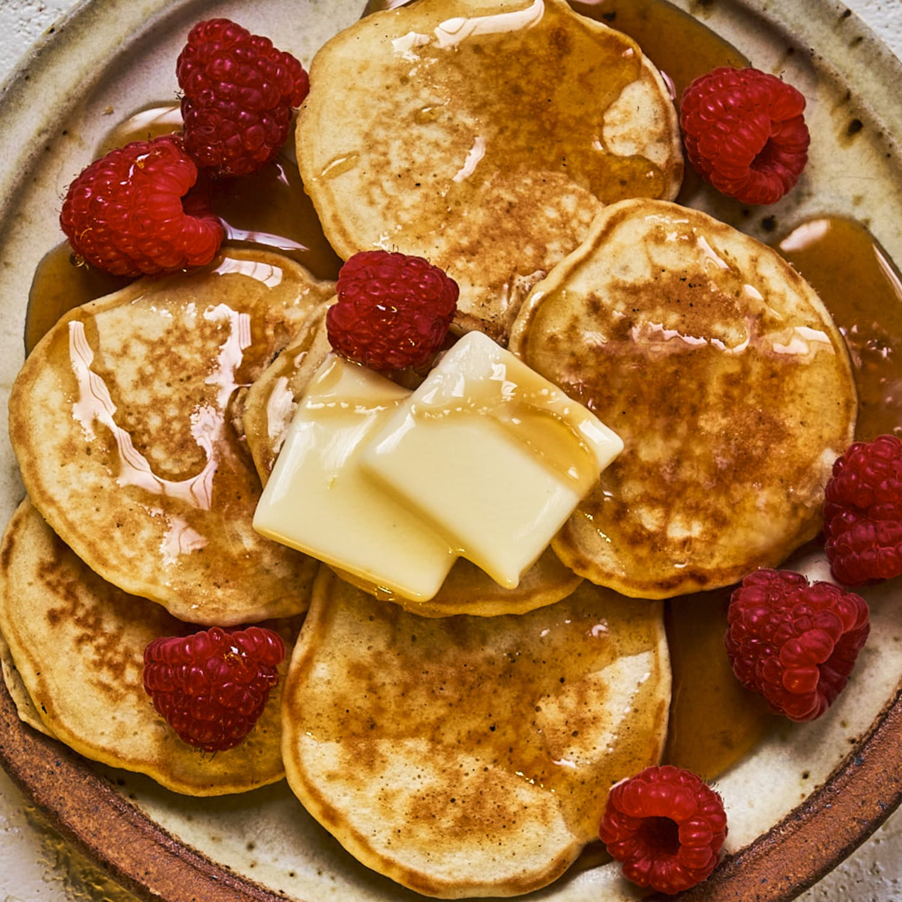

Silver Dollar Pancakes

Description
Silver dollar pancakes are just as light and fluffy as regular pancakes; the only difference is their size. Simply spoon one tablespoon of batter into the skillet or a piping bag or squeeze bottle to create these adorable minis.
Ingredients
- 3/4 cup Melted butter
- 2 tbsp Whole milk
- 1 Egg
- 3/4 cup All purpose flour
- 2 stp Baking powder
- 2 tbsp Sugar
- 1/2 tsp Salt
Instructions
- Melt butter
- Beat lightly: milk, butter, egg
- Add: flour, baking powder, sugar, salt
- Mix
- Melt a little butter in the pan
- Drop batter by tablespoon into the pan
- Turn pancakes over when the top is full of little holes and the base is golden